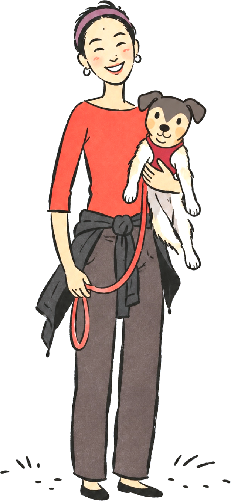
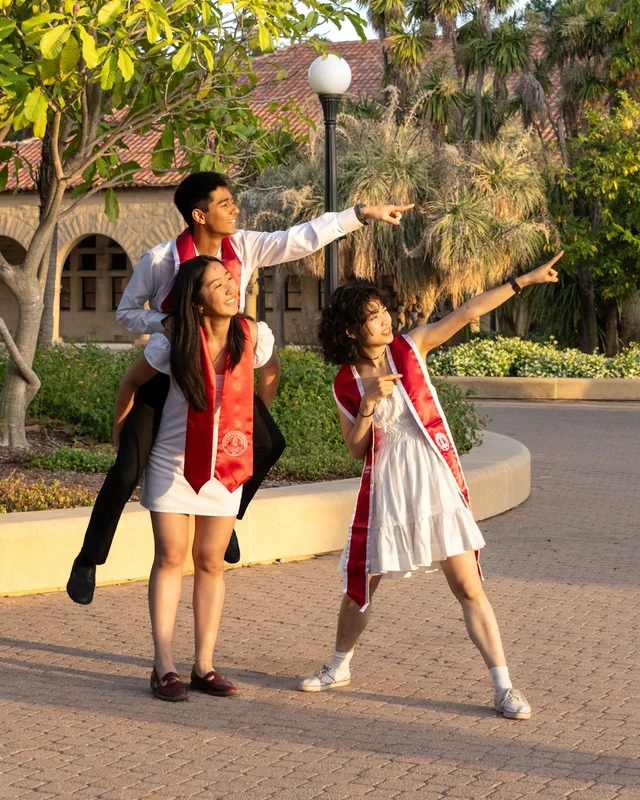
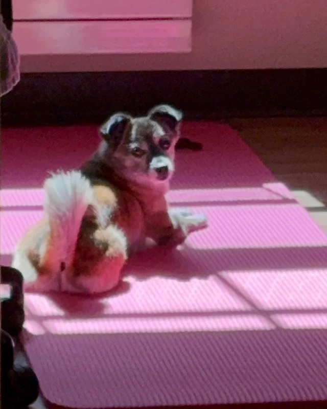
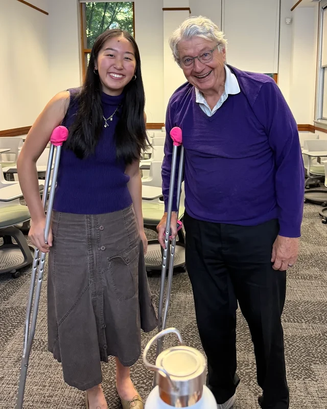

Hi, I’m Emily Tianshi!

I care about the intersection of tech, policy, and social impact. I currently work on AI safety and adversarial model research at OpenAI, where I explore unexpected model behaviors and probe “unknown unknown” risks.
Previously, I've worked on cyber threat intelligence at NATO CCDCOE in Tallinn, Estonia; open-source software security at CISA in Washington, D.C.; election integrity at the Stanford Internet Observatory; and constituent communications for San Diego Mayor Todd Gloria.
I recently graduated from Stanford, where I studied Data Science and International Relations as an undergraduate and earned an M.S. in Computer Science (specializing in AI). During my time there, I founded Stanford's first course on civic technology and government modernization, called Move Fast and Fix Things, helped set statewide voter registration records as Co-Chair of StanfordVotes, and researched intellectual property law at Stanford Law School.
I grew up in San Diego, where my family’s weekend hikes among Torrey Pine trees inspired me to research atmospheric moisture harvesting and found Clearwater Innovation, an environmental advocacy organization. Both were featured in documentaries by National Geographic and HP.
I love humor writing, ballet, ballet flats, and peanut butter, and I continue to hike in search of great trees (especially cypresses along the Northern California coast). I'm also the proud mother of Maxi, an 11-year-old Chihuahua–princess mix. The future, I hope, holds a chapter in public service and founding a crowd-work comedy show.


